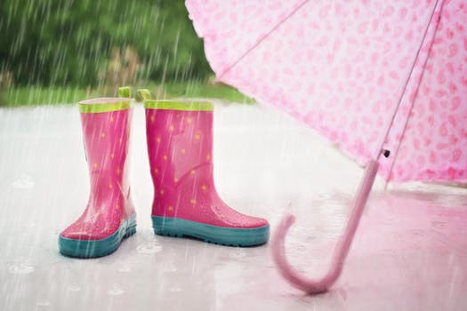

Weather Jokes

This section has been created so you can submit your funny weather jokes.
Please take the time when the link is available to submit your funniest!
Q: Can bees fly in the rain?
A: Not without their yellow jackets!
Q: What happens when fog lifts in California?
A: UCLA!
Q: What does a cloud wear under its raincoat?
A: Thunderwear!